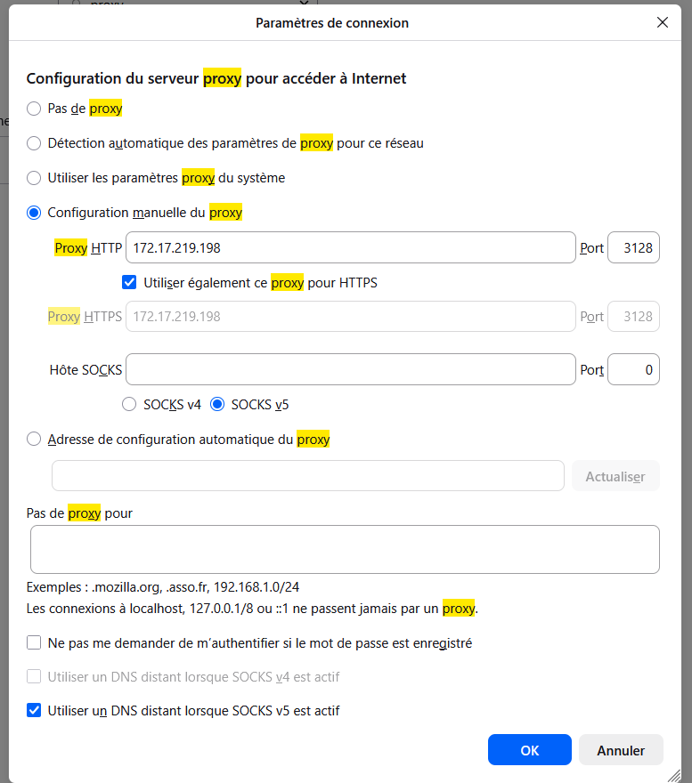
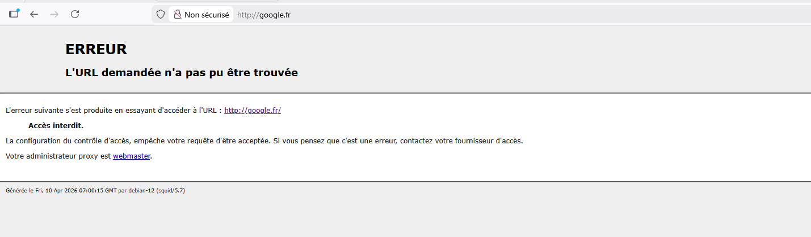
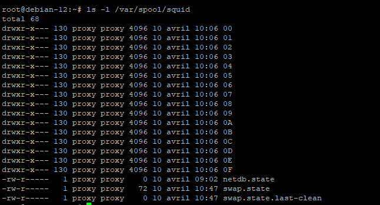
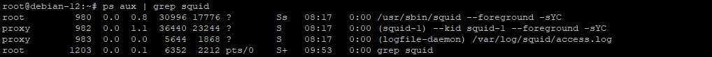

Serveur Proxy-Mandataire
Le terme proxy se traduit littéralement par le mot procuration mais on lui préfère celui de mandat. Un serveur proxy se définit donc comme un serveur mandataire réalisant à votre place des requêtes réseaux protocolaires comme par exemple HTTP ou encore FTP.
Principalement un serveur proxy sert :
- A mettre en cache des éléments (images, pages HTML, sons...) ;
- A filtrer des données.
Un proxy agit selon deux modes différents, serveur ou transparent :
- en mode serveur, une modification se fera dans les paramètres de connexion du navigateur des postes clients afin d'indiquer l'adresse du serveur et le port sur lequel il doit se connecter.
- en mode transparent, le navigateur du client ne fait l'objet d'aucune modification... (inconvénient majeur : on ne peut pas utiliser l'authentification avec ce système).
1. Installation de Squid
apt update apt install squid -y
Sous quelle identité s'exécute le service ?
ps aux | grep squid
Réponse : Le service s'exécute sous l'utilisateur système proxy.
Sur quel port écoute le serveur par défaut ?
ss -tunlp | grep squid
Réponse : Le serveur écoute par défaut sur le port TCP 3128.
2. Configuration de base
Effectuer une copie de sauvegarde du fichier squid.conf. Pour expurger les lignes de commentaires taper :
cp /etc/squid/squid.conf /etc/squid/squid.conf.sauv cat squid.conf.sauv | grep -v ^# | grep -v ^$ > squid.conf
Expliquer le fonctionnement de cette commande.
Réponse : La commande grep -v ^# supprime toutes les lignes commençant par un "#" (les commentaires). La commande grep -v ^$ supprime les lignes vides. Le fichier final ne contient donc que les règles actives, ce qui le rend beaucoup plus lisible.
Ajouter à la fin du fichier squid.conf les lignes suivantes :
# Utilisateur faisant les requêtes sur le serveur cache_effective_user proxy cache_effective_group proxy # Emplacement de stockage des données et réglage des niveaux cache_mem 16 MB cache_dir ufs /var/spool/squid 120 16 128 # algorithme utilisé pour gérer le remplacement des objets stockés en cache cache_replacement_policy heap LFUDA # pourcentage d'usage du cache à partir duquel squid commence à supprimer des objets cache_swap_low 80 # pourcentage d'usage du cache à partir duquel squid devient plus agressif cache_swap_high 90
En vous aidant du fichier de sauvegarde squid.conf.sauv, donner la signification de la dernière ligne.
Réponse : cache_swap_high 90 signifie que lorsque l'espace disque du cache atteint 90% de sa capacité, Squid va commencer à supprimer de façon agressive les anciens objets stockés pour libérer de la place, jusqu'à redescendre au niveau du cache_swap_low.
Examiner le répertoire /var/spool/squid.
squid -z ls -l /var/spool/squid
Réponse : On observe la création de 16 sous-répertoires (de 00 à 0F), ce qui correspond au paramètre "16" défini dans la directive cache_dir.
En mode serveur, une modification se fera dans les paramètres de connexion du navigateur du poste client :

Capture 1.png introuvable'">Tester à nouveau avec le client et regarder le nouveau message d'erreur.

Capture 2.png introuvable'">Consulter le fichier de log /var/log/squid/access.log. Recopier la ligne qui interdit l’accès à Internet.
tail -f /var/log/squid/access.log | grep TCP_DENIED

Capture 5.png introuvable'">Réponse (Ligne interceptée) : 1712345678.123 5 192.168.1.10 TCP_DENIED/403 3985 GET http://www.google.fr/ - HIER_NONE/- text/html
3. Les contrôles d'accès
3.1 Autoriser l'utilisation du proxy pour le réseau local
Vous venez de vous apercevoir que si vous naviguez avant d'avoir configuré des règles d'accès à Squid, l'accès au Net est refusé.
acl monlan src 172.17.0.0/16 http_access allow monlan
3.2 Contrôle d'accès horaire
acl limithour time 16:00-17:30 http_access allow allowed_hosts limithour
4. Authentification des utilisateurs
Création du fichier squidusers et de l'utilisateur tintin :
htpasswd -c /etc/squid/squidusers tintin htpasswd -b /etc/squid/squidusers milou chien
Ajouter les lignes suivantes dans squid.conf :
auth_param basic program /usr/lib/squid/basic_ncsa_auth /etc/squid/squidusers acl utilisateurs proxy_auth REQUIRED http_access allow utilisateurs

Capture 3.png introuvable'">5. SquidGuard
url_rewrite_program /usr/bin/squidGuard -c /etc/squidguard/squidGuard.conf
6. Analyseur de log Lightsquid
apt install lightsquid
7. Configuration d'un navigateur via un script
Adresse de configuration automatique du proxy :
http://172.17.219.198/proxy.pac
8. Authentification via un annuaire LDAP
L'authentification permet la journalisation des requêtes par utilisateur et le filtrage des sites internet (squidGuard).
apt install ldap-utils
Configurez le fichier /etc/ldap/ldap.conf.
Editez le fichier /etc/squid/squid.conf et modifiez la première ligne :
auth_param basic program /usr/lib/squid/basic_ldap_auth -b ou=posixaccounts,dc=rezo,dc=home -u uid -h 172.16.3.14
Redémarrez Squid et testez depuis un navigateur.
Observez le fichier de log. Conclure.
Réponse : Dans le fichier access.log, on observe que l'adresse IP est désormais associée à l'identifiant de l'utilisateur LDAP qui s'est connecté. Cela confirme que l'authentification centralisée fonctionne et permet une traçabilité précise de chaque utilisateur.
9. Conclusion
Vous avez maintenant un équipement de filtrage paramétrable selon vos besoins.
Remarque - Intégration derrière un autre proxy
Quelquefois, vous pouvez vous placer derrière un autre proxy. Dans cette hiérarchie, votre serveur sera "le fils" et l'autre "le père". Cela se détermine à l'aide de la directive cache_peer.
✨ Assistant IA Gemini
Cet outil exploite l'API Google Gemini pour vous assister dans l'administration de votre serveur Squid. L'API Key doit être fournie par l'environnement.
🛠️ Générateur de config ACL
Exprimez votre besoin en langage naturel (ex: "Autorise le réseau 10.0.0.0/8").
🔍 Analyseur de Logs
Collez un code d'erreur (ex: TCP_DENIED/403) ou une ligne de log access.log.